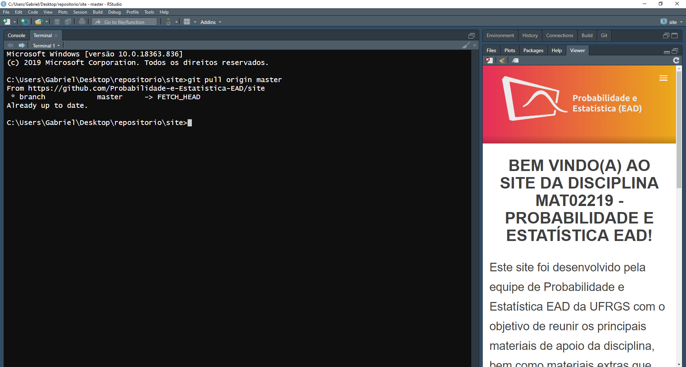
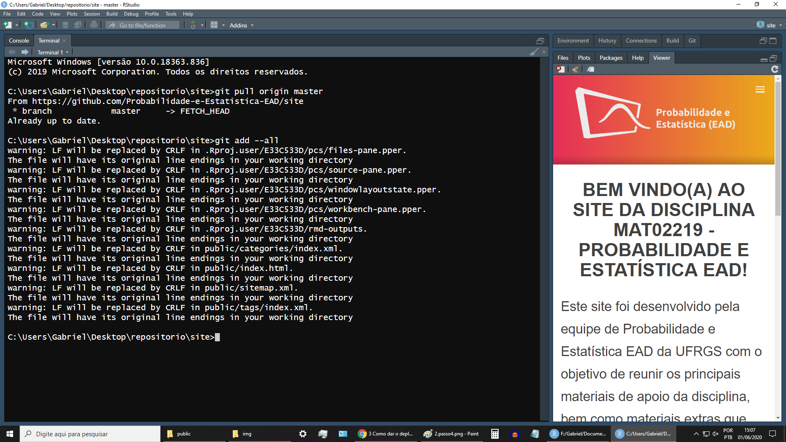
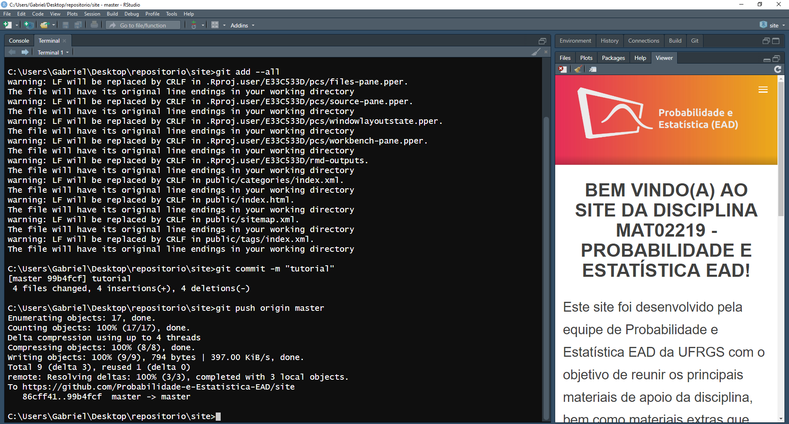

3 Como dar o deploy do site para o endereço UFRGS
1 - Se você terminou as alterações do site e rodou o comando Serve Site, recomendo reiniciar o R para interromper atualização automática e impedir que o comando adicione arquivos à pasta public.

2 - Exclua todos os arquivos da pasta public

3 - Rode o comando blogdown::build_site(). A diferença entre o serve_site() e o build_site() é que o primeiro gera o site para ser visualizado localmente, enquanto que o segundo gera o site para dar o deploy da pasta public no domínio. Ambos modificam o conteúdo da pasta public para cumprir o seu propósito, por isso é necessário excluir os arquivos gerados pelo serve_site() antes de rodar o build_site().

4 - Ao lado da aba Console, clique na aba Terminal e digite o seguinte comando git pull origin master. Esse comando adiciona quaisquer modificações em arquivos que estão no repositório do github mas não no seu repositório local. É importante usar esse comando para se certificar que você não estará sobrescrevendo alterações feitas por outros usuários na branch master, e seu repositório ficará igual ao do github.

5 - Rode o comando git add --all

6 - Em seguida, digite o comando git commit -m "MENSAGEM DO COMMIT"

7 - Digite o comando git push origin master e suas alterações estarão no github.

8 - Por fim, use algum software para dar o deploy no domínio UFRGS, como o FileZilla, lembrando que apenas a pasta public será upada, pois ela é o site.